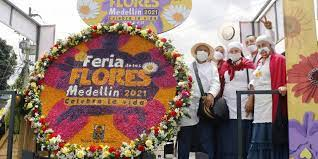

Feria de las flores
La festividad nació en 1957 como un homenaje al legado floricultor del Valle de Aburrá. La primera Feria de las Flores se realizó en la capital antioqueña un 1 de mayo, bajo la iniciativa del antioqueño Arturo Uribe, miembro por aquella época de la Junta de la Oficina de Fomento y Turismo.
